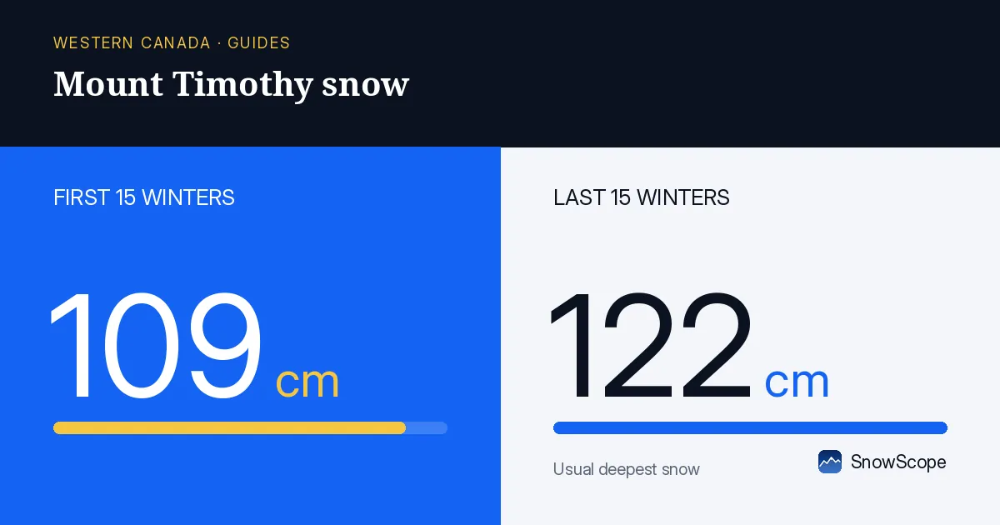
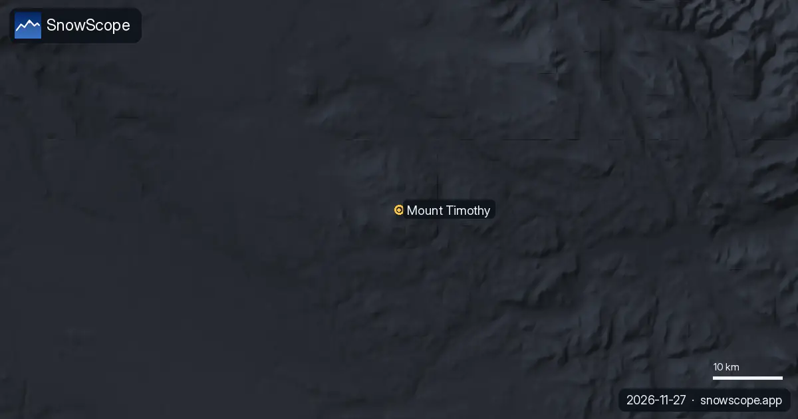

Mount Timothy snow: 7 in (17 cm) on the hill, well short of a normal late November in the Cariboo
Mount Timothy has 7 in (17 cm) of snow on its upper slopes on Friday, November 27, and only about 1 in (3 cm) more is forecast by Monday. At 4,961 ft (1,512 m) that is 2 in (5 cm), where 14 in (36 cm) is normal for the date, so the Cariboo hill is waiting for its first real storm of the season.
See the live snow forecast for Mount Timothy in the SnowScope appSnow depth, powder alerts and the 3D map, free.

Snow report
Upper slopes: 7 in (17 cm). New snow: 1 in (2 cm) in three days. Forecast: dry weekend, 1 in (3 cm) on Monday, about 4 in (11 cm) over seven days. The lifts run from 4,508 ft (1,374 m) to 5,413 ft (1,650 m): a compact mountain with a high base, which keeps its snow cold once it falls.
How far behind is it?
In a usual winter Mount Timothy builds a 30 cm (12 in) base around November 21, and by December 8 it has about 19 in (49 cm) at 4,961 ft (1,512 m). This year the coast storms that buried Whistler mostly passed to the south and west, and the Interior plateau stayed dry and cold.
History says the gap usually closes: by Christmas Day the usual depth is 25 in (64 cm), and a 50 cm (20 in) base by New Year came in 83% of 46 winters.
A look at the extremes
The deepest winter on our record was recent: 2021-22, when the snowpack peaked at 5 ft (152 cm). The leanest, 1997-98, still reached 28 in (72 cm). In a normal year the snow is deepest in early spring, near 37 in (95 cm) in March, which makes late-season days some of the best on the hill.
Why locals love it
Mount Timothy is a community ski hill: family-friendly runs through the trees, a lodge where everyone knows everyone and some of the cheapest lift tickets in the province. It is the kind of place where children learn to ski on weekends and come back as instructors years later.
Cross-country skiers have their own trails nearby on the Cariboo plateau, which often hold snow earlier than the downhill runs because they sit on flat, shaded ground.
Quick answers
When does it usually open? The hill sets its own opening date once the base allows; in most winters that is in December.
Is Christmas skiing likely? Yes, in most years: snow lay on the ground at 4,961 ft (1,512 m) on Christmas Day in 100% of winters, and the usual depth then is 25 in (64 cm).
Where can I follow it? On the Mount Timothy snow page, updated every day.
What would change the picture
A single Interior storm of a foot or more would put the hill close to a normal start; that is what usually happens in early December, when the usual depth climbs from 14 in (36 cm) to 19 in (49 cm) in under two weeks. Cold Arctic air arriving from the north is the other ingredient: it keeps every flake that falls.
Getting there
The hill is a short drive from 100 Mile House on Highway 24 toward Lac La Hache, about four and a half hours from Vancouver. In early winter the roads of the Cariboo can be icy in the morning; winter tires are required on most BC highways from October to March.
Tips for skiers
- Watch for the first big December storm: it is usually what opens the season here.
- Pack for cold: the Cariboo plateau is often colder than the coast by a wide margin.
- Check the hill's opening news before driving up.
- Compare with other BC areas on the Western Canada snow hub and the three-week outlook.
About these numbers
Snow numbers: SnowScope's snow map and forecast for today, and our record of 46 past winters at each resort (an estimate for the area, not the resort's own report).
Official avalanche bulletins: Avalanche Canada
Cite this report
For research, teaching or the press: the numbers and charts are free to reuse under CC BY 4.0 with this citation.
SnowScope (2026), Mount Timothy snow: 7 in (17 cm) on the hill, well short of a normal late November in the Cariboo, https://snowscope.app/blog/en/2026/11/mount-timothy-snow-late-november-2026-cariboo-ski-hill-waiting-for-a-base.html, accessed 2026-11-27
SnowScope (Atlas Labs). (2026, November 27). Mount Timothy snow: 7 in (17 cm) on the hill, well short of a normal late November in the Cariboo. SnowScope snow reports. https://snowscope.app/blog/en/2026/11/mount-timothy-snow-late-november-2026-cariboo-ski-hill-waiting-for-a-base.html
BibTeX
@misc{snowscope2026mounttimothysnowlatenove,
author = {{SnowScope (Atlas Labs)}},
title = {Mount Timothy snow: 7 in (17 cm) on the hill, well short of a normal late November in the Cariboo},
year = {2026},
month = nov,
howpublished = {\url{https://snowscope.app/blog/en/2026/11/mount-timothy-snow-late-november-2026-cariboo-ski-hill-waiting-for-a-base.html}},
note = {Published 2026-11-27 20:31 UTC; accessed 2026-11-27}
}· CC BY 4.0 · Methods, data and tools →
Mount Timothy: snow and temperature by height, this winter vs last (tools) →
Follow Mount Timothy
Free: a message when fresh snow is coming, and the forecast every morning.
More snow reports

Big White near Kelowna is one of the most reliable Christmas resorts in Canada. Today's snow, the usual December 25, and planning the family week.

Apex Mountain Resort in the Okanagan: snow today, the days ahead, how it compares with a normal late November, and what December and Christmas usually look like.

Mount Washington Alpine Resort forecast to receive 359 cm of new snow in the next 14 days, with the heaviest falls in week one. Data from 22 November 2026.